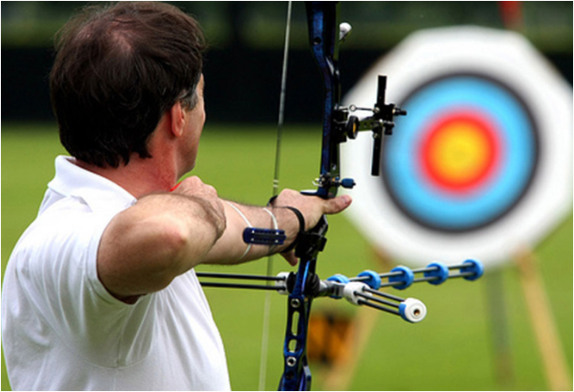

Aiming adalah gerakan seorang pemanah untuk mengarahkan atau menempatkan titik alat bidik (visir) pada titik sasaran yaitu face target. Sikap memanah harus tetap dipertahankan, baik pada posisi tubuh, kepala, tangan pemegang busur dan penarik tali busur, touching point hingga fokus penglihatan karena sedikit pergerakan menyimpang dapat mempengaruhi fokus seorang pemanah.